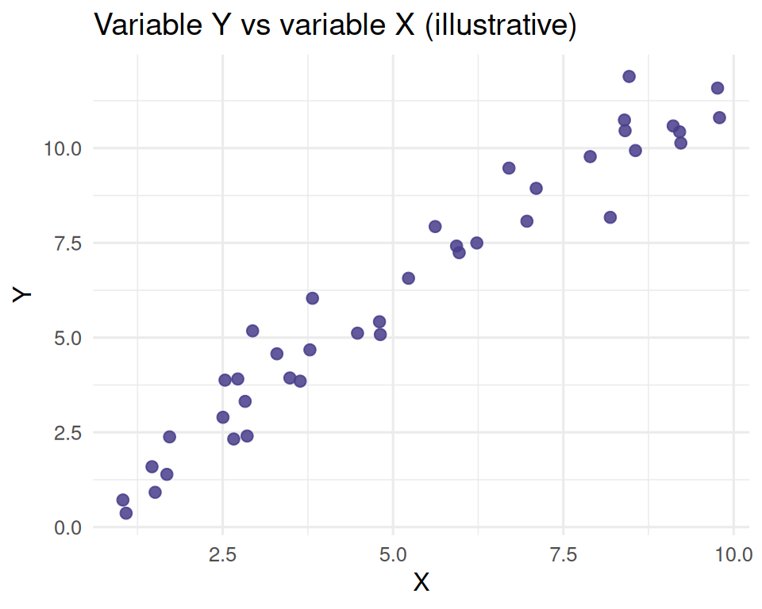
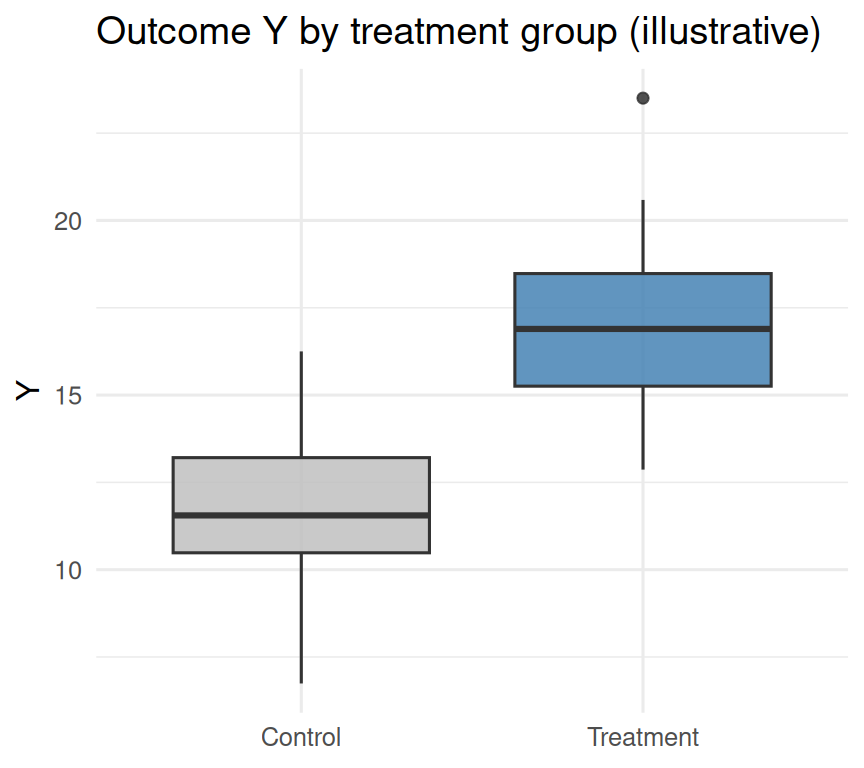
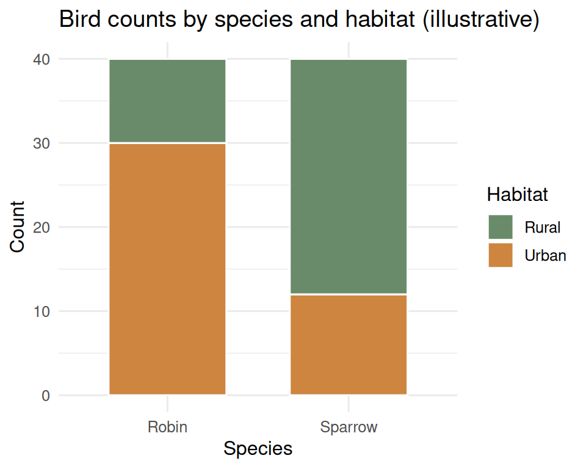

Quiz 10
STAT 109: Introductory Biostatistics
Quiz 10
Quiz 10 practice problems
These practice problems cover Lecture 25 (one numerical variable across groups: spread, boxplots, group summaries; mean vs median as summaries of center), Lecture 26 (two numerical variables: scatterplots, form / direction / strength), Lecture 27 (two categorical variables: two-way tables, joint / row / column proportions, stacked bar charts), and Lab 10 (missing data, read_csv, bivariate plots in R).
Instructions
- Work without notes first, then check your work.
- For multiple-choice items, choose the best single answer.
- You may use a scientific calculator on this quiz and your hand draw “methods” table (aka our statistical “toolbox” organized by purpose and type of data).
Part A: Read the graph (printed figures)
The figures below are for practice only (made-up teaching data). In each part, answer the multiple-choice questions.
A1. Scatterplot (Lecture 26)
(a) Which phrase best describes the direction of the association?
a) Positive (as X increases, Y tends to increase).
b) Negative (as X increases, Y tends to decrease).
c) No clear direction.
(b) Which phrase best describes strength?
a) Strong (points hug a clear trend).
b) Weak (almost no pattern).
c) Moderate (a visible trend with noticeable scatter).
(c) Which phrase best describes form?
a) Roughly linear.
b) Clearly curved (nonlinear).
c) No simple form.
A2. Boxplots comparing two groups (Lecture 25)

(a) Which group has the larger median?
a) Control
b) Treatment
c) They are essentially the same.
(b) Which group’s IQR appears to be larger?
a) Control
b) Treatment
c) Hard to tell from the plot.
A3. Stacked bar chart (Lecture 27)

Each bar is a species; segments are Urban vs Rural; height of a segment is the count in that cell.
(a) The total height of the Robin bar equals which quantity?
a) The number of Robins (Urban + Rural).
b) The proportion of all birds that are Robins.
c) The number of Urban birds of all species.
(b) The height of the Urban segment in the Robin bar divided by the full height of the Robin bar equals which quantity?
a) A joint proportion (that cell count ÷ total birds of all species).
b) A row proportion (Urban among Robins).
c) A column proportion (Robins among Urban birds).
Part B: Choose the recommended plot (multiple choice)
For each pair of variables, pick the best primary plot from the list (assume you want one clear graphic for a report):
Choices for plotting two variables: (same for each question):
a) Scatterplot (geom_point)
b) Boxplot per category (geom_boxplot with fill or group)
c) Histogram with groups overlaid or faceted (geom_histogram with fill or group)
d) Stacked bar chart (geom_col with fill or group)
B1.
Variable 1: stem diameter (cm)
Variable 2: forest type (pine, oak, mixed)
B2.
Variable 1: soil nitrate (mg/kg)
Variable 2: leaf nitrogen (%)
B3.
Variable 1: island (Newberg, Erie, Coney).
Variable 2: species (blackbeak, redbeak, bluebeak)
B4.
Variable 1: body mass (g)
Variable 2: coast (west, east) and You want to compare the shape of the mass distribution between the two coasts.
Part C: Lab 10 — read_csv and drop_na (multiple choice)
C1. read_csv()
What does read_csv("https://example.com/data.csv") (with a valid URL) do in R?
a) It reads a “colon separated value” file and replaces all the colons with dashes.
b) It reads a CSV file from the web into R as a data frame–like object (typically a tibble).
c) It deletes all missing values in the dataset and then loads the result as a macaroon.
d) It only works on files you already uploaded to Google Drive.
C2. drop_na()
Suppose we write penguins |> drop_na(species, bill_length_mm). What is the main effect?
a) It drops the columns species and bill_length_mm from the penguins dataset.
b) It removes every row that has an NA in either species or bill_length_mm (or both).
c) It replaces any NA in either species or bill_length_mm with zero.
d) It keeps only rows in penguins where both variables species and bill_length_mmare not NA.
Part D: Two-way table — proportions by hand
D1. Joint proportions
All plants in a small plot are classified by shade (Sun, Shade) and height class (Short, Tall). The counts are:
| Short | Tall | Row total | |
|---|---|---|---|
| Sun | 6 | 14 | 20 |
| Shade | 10 | 10 | 20 |
| Column total | 16 | 24 | 40 (grand total \(N\)) |
Compute the four joint proportions. Check that they sum to \(1\).
D2. Row vs column proportions
Use the same table as in D1 and compute
(a) Row proportions: what fraction of Sun plants are Short, and what fraction are Tall?
(b) Column proportions: what fraction of Short plants are in Sun, and what fraction are in Shade?
Part E: Boxplot by hand (Lecture 25)
E1. Five-number summary and sketch
The sorted leaf length values (cm) for \(n = 9\) plants are:
\[2,\ 4,\ 5,\ 6,\ 7,\ 8,\ 9,\ 11,\ 15\]
Use the same splitting rule as in Lecture 25 for odd \(n\): the median is the middle value; the lower half and upper half for quartiles exclude the median (four values in each half); for four numbers, \(Q_1\) and \(Q_3\) are the averages of the two middle values in each half.
(a) Report the five-number summary: min, \(Q_1\), median, \(Q_3\), max.
(b) On paper, sketch a boxplot of these data (remember this is a box from \(Q_1\) to \(Q_3\), median line inside, whiskers to min and max (no outlier rules for this exercise). Label the numeric positions of the box edges and median on the axis.
Reuse
Creative Commons Attribution-NonCommercial 4.0 International(View License)